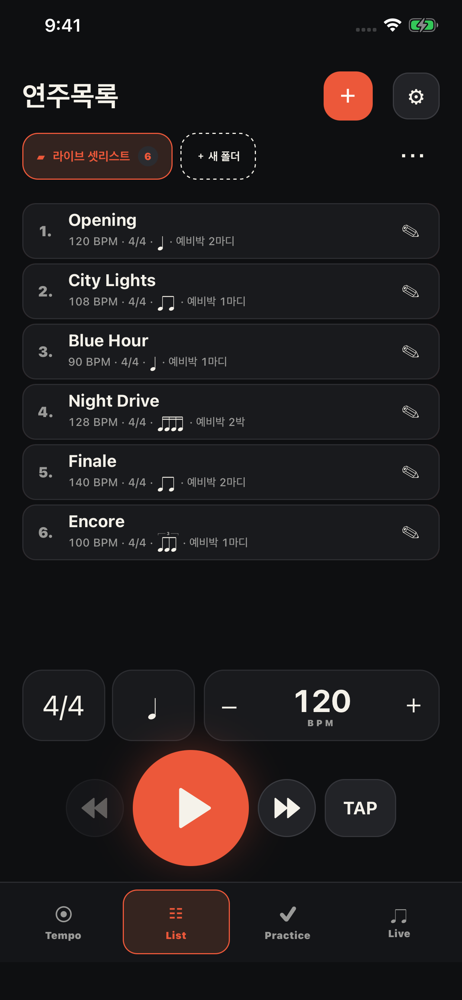
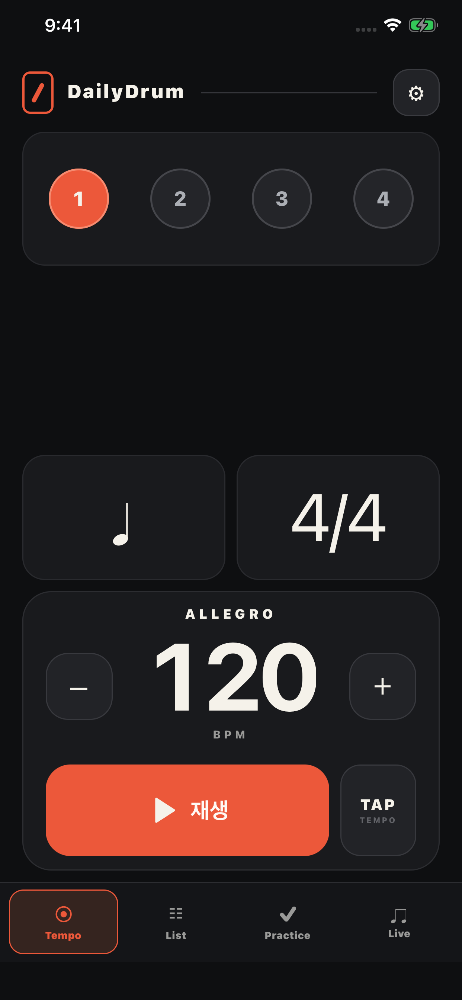
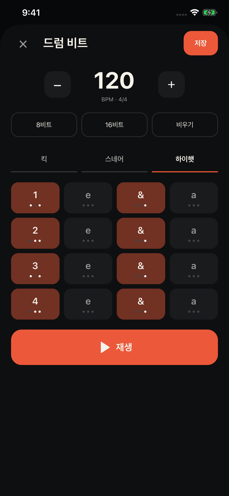
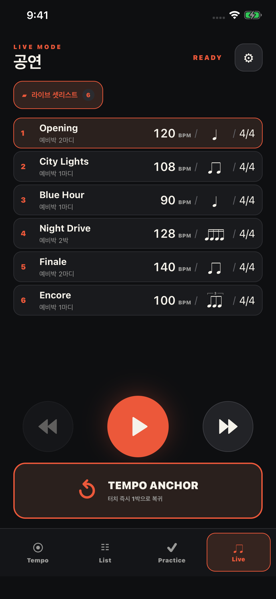
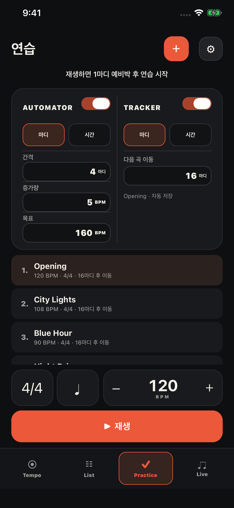
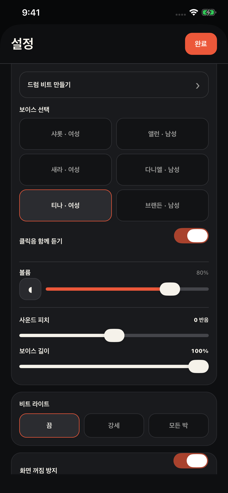

LIST
곡마다 준비하고,
목록째 공유하세요.
BPM·박자표·분할·예비박을 곡별로 저장합니다. 폴더로 정리하고 파일로 보내면, 상대방은 새 목록으로 가져올 수 있습니다.
회원가입 없음 · 실시간 동기화 아님

YOUR RHYTHM. EVERY DAY.
클릭을 맞추고, 그루브를 만들고,
준비한 셋리스트로 무대에 오르세요.
메트로놈 · 드럼 머신 · 연습 · 라이브

FROM PRACTICE TO STAGE
박자와 설정은 TEMPO에. 집중은 연주에.
DRUM MACHINE
킥·스네어·하이햇을 16개 칸에 찍어 비트를 만드세요. 8비트·16비트 프리셋으로 시작하고, 패턴을 바꾸며 바로 들어볼 수 있습니다.
설정 → 드럼 비트 만들기

LIST
BPM·박자표·분할·예비박을 곡별로 저장합니다. 폴더로 정리하고 파일로 보내면, 상대방은 새 목록으로 가져올 수 있습니다.
회원가입 없음 · 실시간 동기화 아님

LIVE
곡을 넘기면 저장한 보이스 예비박으로 준비합니다. 급한 BPM·박자·분할 수정도 화면에서 바로. TEMPO ANCHOR로 첫 박을 다시 맞추세요.
곡별 예비박 · 큰 조작부 · 즉석 설정

PRACTICE
오토메이터로 목표 BPM까지 템포를 바꾸고, 트래커로 정해진 마디나 시간 후 다음 프리셋을 이어갑니다.
마디·시간 기준 · 프리셋 저장

VOICE & SOUND
6가지 영어 보이스와 클릭 사운드. 음량·피치·길이를 조절하고, 박마다 약세·강세·무음을 정하세요. 비트 라이트로 박을 눈으로도 확인합니다.
보이스 한 박 미리듣기 · 클릭음 켜기/끄기

WHAT'S NEW / 2.4
GET TO KNOW TEMPO
기본 재생부터 예비박, 목록 공유, 드럼 머신까지.
실제 화면과 짧은 설명으로 정리했습니다.
READY FOR YOUR NEXT BEAT?